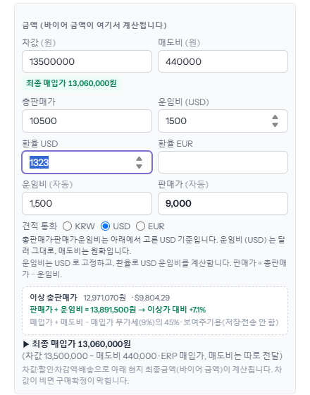
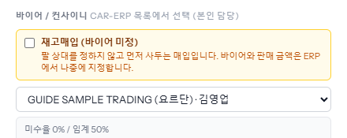
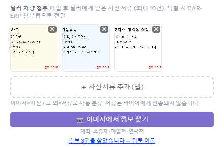
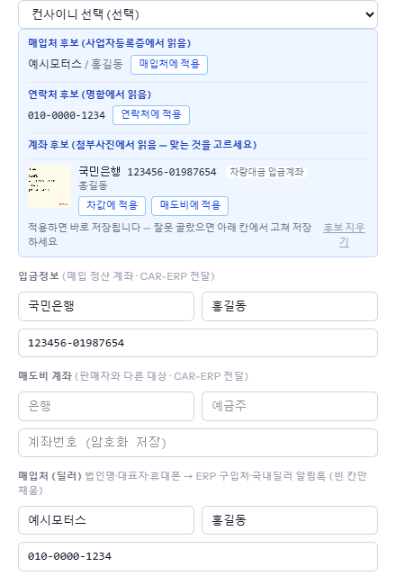
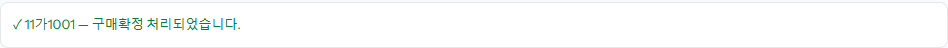

바이어가 수락한 차를 실제로 사는 단계입니다. 「경매/구매」에서 금액·바이어·딜러 서류·입금정보를 넣고 [구매확정]을 누르면 차가 ERP 재고로 넘어갑니다. 계좌·매도비·매입처는 확정 전에 넣어야 합니다 — ERP 는 처음 받은 값만 쓰고 나중에 board 에서 다시 보내도 바꾸지 않습니다.
바이어가 수락한 차만 여기에 모입니다. 「처리」 칸 「집행 대기 · 클릭」을 누르면 오른쪽에 창이 열립니다.
「운임비 (자동)」과 「판매가 (자동)」은 계산돼 나옵니다(판매가 = 총판매가 − 운임비). 아래 「이상 총판매가」는 참고용입니다.

ERP 에 등록된 내 바이어 목록이 나옵니다. 🔒 가 붙은 바이어는 미수가 쌓여 ERP 가 잠근 바이어라 구매확정이 막힙니다. 바이어 없이 먼저 사는 차면 「재고매입 (바이어 미정)」에 체크합니다(「재고매입」 가이드).

「딜러 차량 첨부」의 [+ 사진·서류 추가]로 통장 사본·사업자등록증·명함·차량 사진을 올립니다(최대 10건). 첨부가 하나도 없으면 구매확정이 되지 않습니다. 올린 뒤 [이미지에서 정보 찾기]를 누르면 계좌·소유자·매입처·연락처를 읽어 후보로 보여 줍니다(20초 안팎).

파란 칸에 읽어 낸 후보가 나옵니다. 맞으면 [차값에 적용](입금정보)·[매입처에 적용]·[연락처에 적용]을 누릅니다. 누르는 즉시 저장되고 아래 칸이 채워집니다. 잘못 읽었으면 칸에서 직접 고칩니다. 후보는 사진을 보고 꼭 확인하세요 — 사진이 돌아가 있거나 흐리면 틀리게 읽을 수 있습니다.

창 맨 아래 초록 [구매확정]을 누릅니다. 버튼이 흐리면 그 위 빨간 줄에 이유가 적혀 있습니다(바이어 미선택·잠긴 바이어·첨부 없음·차값 없음 등). 확정되면 아래 안내가 뜨고 잠시 뒤 오른쪽 아래에 「car-erp 전송 완료」가 뜹니다. 매입예정 목록에서는 「ERP 전환완료」로 바뀝니다.
